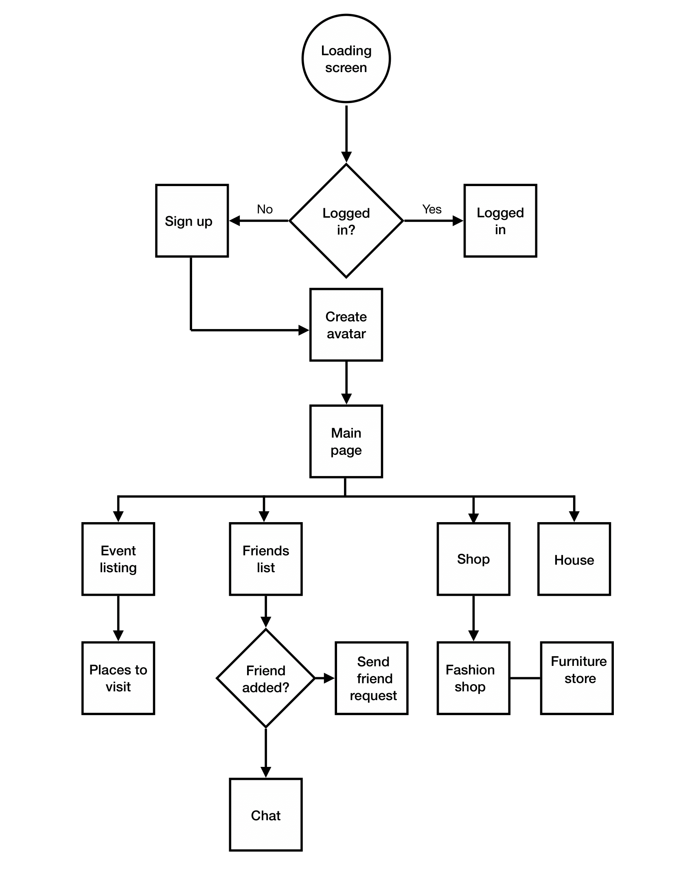

Case Study: Virtual Hangout
COGS102C project | Team 21
About
For this class, we were tasked with coming up with a digital solution to help people during the coronavirus pandemic. Examples of some issues that we could have tackled included helping people stay healthy, improving remote work, supporting social distancing, dealing with stress, etc.
We chose to focus on helping people stay healthy. This was very broad at first, but was expected to be narrowed down later as we got more information. The people we planned to interview were people who we knew were essential workers. We chose these people because it was less difficult to establish contact with them since we either see them whenever we visit grocery stores and health clinics, or we already knew them personally. Knowing them personally had the added benefit of being easier to interview and conduct prototype tests.
In the end, our project was on helping essential workers deal with boredom, and we have created a work-in-progress prototype of an app called Virtual Hangout as one idea of a digital solution.
Our stakeholders
Eve
Eve is an employee at UCSD's Sixth Market. At first she was worried about working during the pandemic because she could potentially catch the virus. But she needed some form of income to help pay for rent. Her workplace has also implemented sanitization procedures, which she is generally satisfied with. During her week off, she has stated that she felt bored and desired to go back to work.
I just laid around the house feeling bored and not doing anything. Me and my roommate were just on our phones...so boring. I wanted to go back to work....I don't know how you guys have been able to stay at home all day.

John
John works as a receptionist for a car insurance company. He doesn't really think his job is essential and confides that most of his job can either be done at home, or not exist at all because "it's not really necessary right now", but he's grateful to still have the job and not be furloughed because then it would be more difficult to pay rent. His workplace has implemented sanitization procedures gradually. John feels generally safe at work because he doesn't interact with a lot of people anyways.
We didn't really start using a lot of sanitizer until the coronavirus got really serious. But I've already started some sanitization personally, and I'm glad I still have a job.
Problems identified
After conducting the interviews, we started mapping out their responses.
Based on these models we have noticed some positives and some negatives:
| Positives | Negatives |
|---|---|
| Though the news and social media show vastly different experiences, our stakeholders were generally satisfied with how their companies have implemented coronavirus sanitization and safety measures. | They can't visit or see friends and family in person, and they miss them. |
| They are glad that work gives them something to do, and they have people to talk to. | Reading the news and social media about the coronavirus pandemic stresses them. |
| Though they can no longer go to the gym to work out, their workplaces give them the opportunity to move around and go outside. | They can't do the things they like to do for fun such as take walks in the park or attend events because everything is closed. |
| Changes in their lifestyles include increased sanitization and more cooking at home. | Changes at work include new sanitization rules, low supply and high demand for items, changes in customer behavior (though most are patient and understanding), new or constantly changing work hours. |
| They like how everyone is cleaning up after themselves more, using hand sanitizer, and are better at respecting personal space. | Not being at work and being at home is relaxing but extremely boring, and as a result they find themselves eager to go back to work. |
Looking at the problems we've identified, the team decided to focus on helping
stakeholders deal with boredom when not working. We thought this was relevant to
many people, not just workers, who are stuck at home during the coronavirus pandemic.
Therefore, it would be easier for us to empathesize with them when they describe
their issues in dealing with boredom.
Ideation
After having narrowed our topic, we brainstormed various solutions that could help deal with boredom.
- Give essential workers points for working during pandemic. These points
can be redeemed for food, entertainment like movies or games,
essential items, etc.
Cons: May incentivize workers to work more even though that is not ideal.
- A map app that shows areas that are open and less crowded so workers
can go out and take walks instead of staying indoors all day.
Cons: Workers already exercise at work. Though stay-at-home order doesn't necessary mean that they can't go outside to exercise, some workers may still feel unsafe about going out. They also feel too lazy or too tired to leave their homes.
- Create a virtual world app to help workers connect with friends
and family as well as attend virtual events.
Cons: Workers are already bored on their phones, and this may continue that boredom. Additionally, creating a virtual world may be beyond our artistic abilities and the scope of this class.
Storyboards
We drew out these ideas onto storyboards to help better imagine what these activities could look like in our stakeholders' lives.
We decided on Idea #3, create a virtual world app, because it dealt with the issues that our stakeholders had with communicating with friends and family, as well as boredom from not having any events to attend and feeling stuck at home when not working.
Low-Fidelity App Design
First we started to map out necessary pages for our app. These pages included a home page with the user's avatar, fashion shops to customize the avatar, and event pages and places that the avatar can visit.
Then we individually sketched out our own design for the app pages, later consolidating features that we liked from our designs.
Mid-fidelity sketches
We translated our sketches onto Figma to create interactive mid-fidelity sketches. We thought that it would be easier to test the app with our Stakeholders digitally as this would make more sense and be easier to operate than looking at our sketches.


{kind=link}
{kind=link}
{kind=link}
{kind=link}
{kind=link}
{kind=link}
{kind=link}
{kind=link}
{kind=link}
One major roadblock that we came across was that our stakeholders wanted to have a landscape view for the places that they could visit in the app, but the Figma application's prototype tool is fixed at one orientation without any ability to rotate the screen. As a result, we had to create two separate sections for the prototype, one for the portrait view of certain pages of the app, and another for the landscape view of the event pages. This resulted in having to send in two links to our stakeholders, one to the landscape mode prototype and the other to the portrait mode prototype and asking them to pretend that they had just rotated their phone.
Testing
When showing our stakeholders our rough digital prototype sketches, we asked them questions and scenarios related to the functioning of the app to see if the flow of the pages made sense. We asked them to say out loud their thought process as they navigated the app. While testing the app, we also tried to perceive whether the app succesfully dealt with the user's boredom. This was estimated by what activities in the app the user stated they enjoyed doing, how long they stated they would spend at an event, and what times of the day they would go on the app.
How would you find out about events in this app?
Would I have to check social media first?
You could, but more specifically, try to do it in this app.
Well, there's a visit arrow, so I'll check that (switches to landscape prototype), and I see that there's some places I could go to, and then I think I'll click on the music note button labeled Concert hall, and then, okay, I see the event happening. It's Pink. I click 'Join' and then...I'm in...right?
How long would you stay at this event?
I mean, if they're good Pink songs, I'll stay for like....If the concert is kinda like Fortnite's then that's like, what, an hour? I might not actually stare at my phone the entire time, like I could listen to the songs in the background.
We tried not to indicate or hint to our testers the correct answer or directly tell them how to use the app as the goal was to make sure whether the app made sense to them. In addition to testing our stakeholders, we also received some feature requests from them.
I want to have, like, more ways to customize my avatar. You know, not just clothes for the avatar. Or have more ways to spend money.
I would like to see more mini-games because events can be pretty long. Something that I could play while microwaving food.
I think the app overall looks really cute. I think the fishing game, though, could have more levels.
In addition to adding some of their requests, we took the data from the testing interviews and added more features such as the ability to invite friends to events, to move your character by moving your body in real life, and to earn currency in the game by walking. The friend feature encouraged the user to interact with others, and movement features sought to make the user more active rather than be soley on their phones. These features also sought to make the app more immersive and engaging.
Final Prototype
Currently we are at the stage of creating our final app prototype with hi-fidelity elements. You can interact with it below. Note: You may need to click expand within the Figma embed to see the full app.